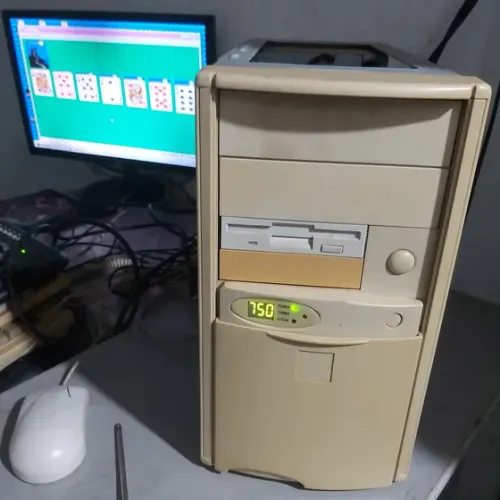

Ola! Seja bem-vindo a minha pagina pessoal sobre computadores antigos. Aqui voce vai encontrar curiosidades, listas e fotos das maquinas que marcaram a historia da informatica.
Este site foi feito apenas usando HTML puro, do jeito que se fazia na epoca de ouro da Internet kkk.
Ultima atualizacao: 27/08/2026
Este site fala sobre computadores antigos, daqueles que ocupavam a mesa inteira e faziam um barulho de disquete tocando. A ideia surgiu depois de estudar as geracoes dos computadores na faculdade do IFSUL e perceber como essas maquinas eram incriveis para a epoca delas, e pela Atividade EAD do Professor Leonardo Constantin.

| Computador | Ano | Fabricante | Nota |
|---|---|---|---|
| Commodore 64 | 1982 | Commodore | 10 |
| IBM PC 5150 | 1981 | IBM | 9 |
| Macintosh Classic | 1990 | Apple | 9 |
| Amiga 500 | 1987 | Commodore | 10 |
Esta pagina esta sempre em construcao!
Visitante numero: 00001 (contando com a minha pessoa)
Melhor visualizado em uma resolucao absurdamente especifica, no seu monitor de tubo.